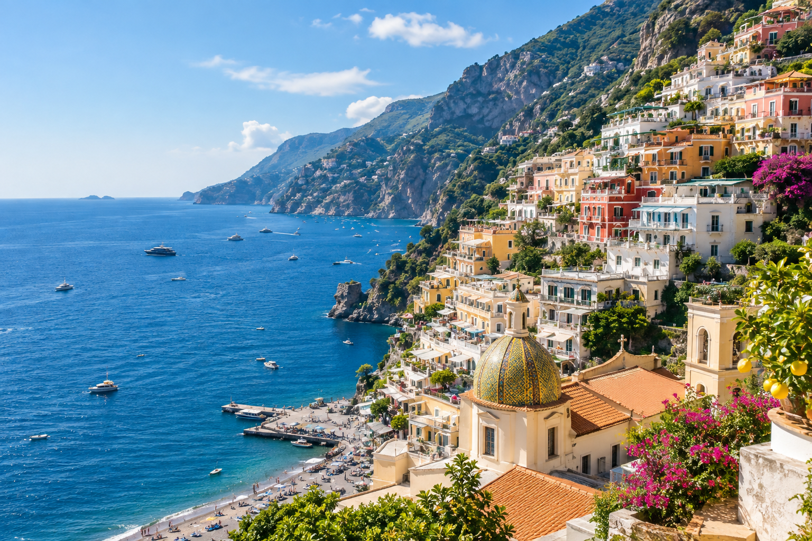
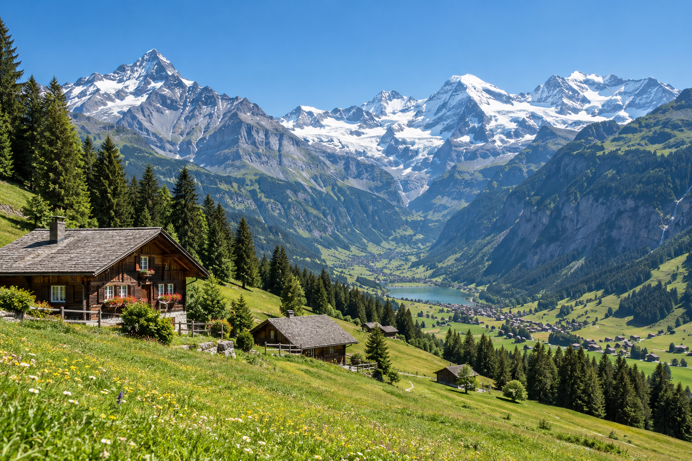
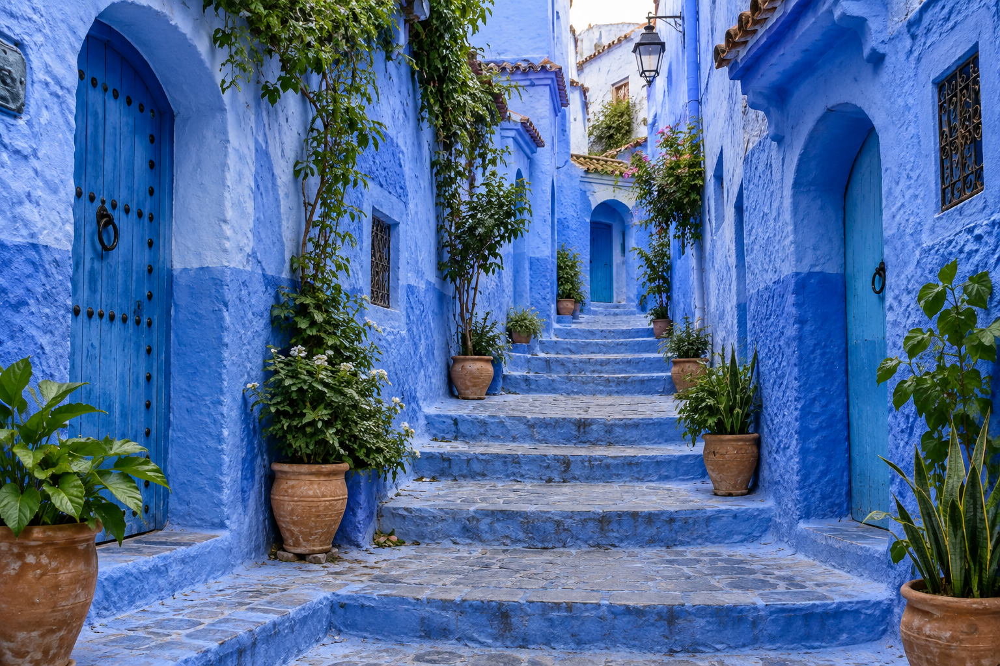

Italy / Slow travel
A weekend on the coast
Sun-warmed towns, winding stairways and sea views at every turn.
A slower pace, a richer perspective, and a weekend we won’t forget.

The travel journal
Real places. Meaningful stories. A more
curious way to see the world.
Italy / Slow travel
Sun-warmed towns, winding stairways and sea views at every turn.
A slower pace, a richer perspective, and a weekend we won’t forget.

Switzerland / Hiking
Mountain trails, alpine lakes and the kind of views
that make you breathe a little deeper.

Morocco / Culture
Wandering through Chefchaouen’s blue streets, where
every corner feels like a postcard.